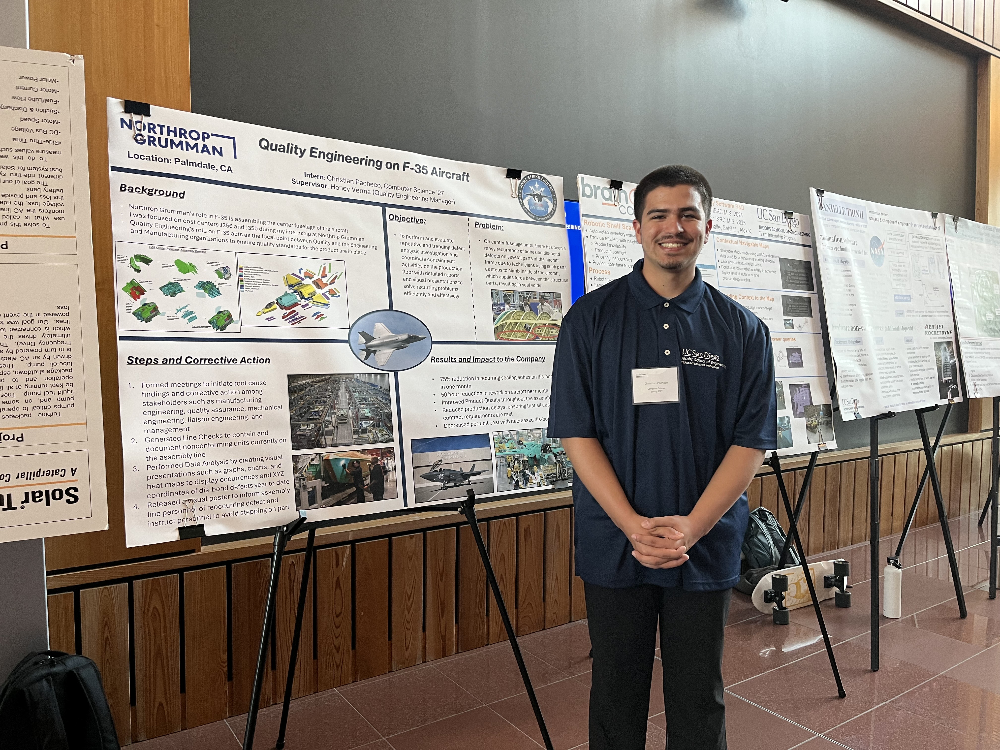

I'm Christian Pacheco, from Lancaster, California. I am a student at UC San Diego majoring in Computer Science with a strong focus on data analysis and system integration. Experienced in quality and software engineering through Northrop Grumman internships, with skills in data analysis, defect investigation, process improvement, and cross-team collaboration. Proficient in programming (Python, Java, C++, C, SQL), database management, and application development using Vaadin and Oracle SQL Developer. Recognized for leadership and achievement, including the Future Leader: Class of 2023 award.
Video Games, Photography, and Tennis!
I am the second oldest of 8 children in the family!
To continue developing my skills in software engineering and data analysis through meaningful projects and internships, along with the courses I take!